1Architecture diagram
Three places: the hospital, split into clinical, AI inference and data network zones; the HCMUT lab, where the AI team annotates and trains on de-identified data (D12); and the cloud, which holds the long-term archive. The flows below walk through each path in order.

Tan frames are sites (hospital, HCMUT lab, cloud); dashed red frames are network zones, plus one frame for what runs on each Orthanc node, since the AI worker is an Orthanc plugin. Every connection to the lab goes over a VPN that the hospital opens through the egress firewall. Ports, products and VLAN numbers are reference values; the MONAI blocks are proposed (D11). Monitoring, DNS, time synchronization and certificates are not drawn. Open the interactive version (hover a node, follow a link, switch theme, export). Drawn with Archify from assets/diagrams/architecture.architecture.json.
2Physical layout
Where each box of the diagram runs at the hospital. Staging runs elsewhere, at the HCMUT lab (see Staging below). At the hospital everything fits in one server room: rack A and rack B on separate UPS feeds, and a network rack. Counts are reference values; the GPU and disk sizes come from the PoC and the hospital's study volume.

Small services run as virtual machines on two app hosts. The witness host and the three etcd members are the Patroni consensus store from D5. In scenario 2 the inference GPU server moves to site 2 and everything else stays where it is. Open the interactive version (hover a node, follow a link, switch theme, export). Drawn with Archify from assets/diagrams/physical-layout.architecture.json.
- Each HA pair is split across the racks. dcm4chee, Orthanc, OpenLDAP and PostgreSQL have one node in rack A and one in rack B, so losing a rack, its UPS feed or its switch ports leaves one of each running. SeaweedFS is set to keep a copy of every volume in the other rack.
- Quorum needs a third place. etcd and the SeaweedFS masters need a majority, which two racks alone cannot give after a rack loss; the witness host in the network rack is the third member.
- The hospital has one GPU server, for inference only, with no twin. The AI is best-effort: if the server fails, triage stops and doctors read in normal order. Annotation and training run on the AI team's GPU at the HCMUT lab (D12), reached over a VPN that the hospital opens through the egress firewall.
- Desks need no GPU. Radiologists and annotators run 3D Slicer on ordinary workstations; masks are computed on the GPU server and only displayed there.
- The cloud is the long-term archive. SeaweedFS keeps the last 90 days of studies on-premise; older studies exist only in the cloud tiers and come back through the backup gateway (Flow 5). Losing the server room means rebuilding from the cloud, which takes days.
Staging. Staging runs at the HCMUT lab, not at the hospital, on four servers with one Docker Compose project each (deploy/staging). It tests the path CT → PACS → gateway → AI → PACS with one node per component. The AI side, MONAI Label for both inference and training, is at the same lab on the AI team's own GPU server, run by that team; the gateway reaches it through AI_SEGMENT_URL. Because the lab is outside the hospital, staging should hold test data only, such as the public CT-ICH set, and no patient studies.
| Staging server | Runs | vCPU / RAM / disk | At the hospital |
|---|---|---|---|
| PACS | dcm4chee-arc 5.35, OpenLDAP, nginx, OHIF | 8 / 16 GB / 50 GB | dcm4chee and OpenLDAP on app hosts A and B. Radiologists read in 3D Slicer (D10); OHIF is only a test viewer in staging |
| Gateway | Orthanc with the PostgreSQL plugin and the Python plugin (AI worker) | 4 / 8 GB / 50 GB | Orthanc nodes on app hosts A and B, same plugins |
| Database | PostgreSQL 17, databases pacsdb and orthanc | 4 / 16 GB / 150 GB SSD | Primary and standby with Patroni and etcd. The AI results database is not created in staging yet |
| Storage | SeaweedFS, buckets pacs, orthanc, research | 4 / 8 GB / 250 GB | Four storage nodes, each volume copied to the other rack |
| AI (MONAI Label, GPU) | Inference and training on the AI team's GPU server at the same lab, run by that team; not one of the four servers | n/a | Inference GPU in rack A; hemorrhage_dev and training stay at the lab (D12) |
Two links cross from our four servers to the AI team's server, both inside the lab network: the gateway calls the AI endpoint (NIfTI in, mask out), and, once annotation starts, the AI side reads de-identified studies from the gateway's DICOMweb (port 8042, read only). Staging leaves out HA, Keycloak, the backup gateway, the egress firewall and the cloud. In the hospital deployment the lab keeps the same role for annotation and training (D12), and only de-identified research cases go there.
3Sequence diagrams
The architecture diagram shows where each part runs; these diagrams show in what order the parts talk to each other, including what the radiologist and the annotators see in their user interfaces (boxes tagged UI). Pick a diagram, then click a numbered arrow or press ← → to walk through it one step at a time.
4The five layers
Each layer is a separate network zone (VLAN). Traffic between zones is blocked by default and allowed only for the specific connections drawn in the diagram. A single egress firewall on the hospital boundary is the only way out to the cloud.
Clinical
What doctors use every day: scanners, the PACS (dcm4chee), the radiologist viewer, single sign-on, and HIS/RIS. The path from scanner to viewer stays inside this layer.
AI inference
The Orthanc gateway, with the AI worker running inside each node as a plugin, and one MONAI Label server on the GPU, whose hemorrhage_approved model runs on every study. The gateway is the only receiver of PACS exports and returns a hemorrhage mask, a report and a priority flag. Runs 24/7 but is best-effort: if it stops, doctors read in normal order.
AI research
At the HCMUT lab, outside the hospital, run by the AI team: annotation (3D Slicer + MONAI Label hemorrhage_dev), its trainer, the label store and the model registry. Works only on de-identified cases that the gateway pushes over a VPN the hospital opens; nothing at the lab can connect into the hospital (D12).
Data
The state behind the PACS (SeaweedFS for image files, OpenLDAP for configuration, PostgreSQL for the index), and, on the same SeaweedFS cluster, a research bucket for labels and frozen datasets, and the backup gateway. VLAN 80 carries heavy storage traffic.
Cloud
Storage only: encrypted, write-protected buckets that hold studies and database backups, moving to cheaper tiers as they age.
5Component glossary
| Component | Layer | What it is | Role in this system |
|---|---|---|---|
| CT / MRI | Clinical | The scanners (also called modalities) | Send the head scan as a DICOM study straight to the PACS |
| DICOM | n/a | The standard file format and network protocol for medical images | Used by scanners, PACS, the gateway and the AI service to exchange images |
| PACS (dcm4chee) | Clinical | Picture Archiving and Communication System: the hospital's central image archive. dcm4chee is a stateless, cluster-safe application | Receives studies from the scanners, serves them to the viewer over DICOMweb, holds the official clinical record, and pushes selected series once to the gateway |
| 3D Slicer (radiologist viewer, proposed) | Clinical | Desktop workstation for DICOM studies, with an ICH Triage Python module (assessment) | Opens the series that have arrived while later ones are still coming; shows the AI mask once it is ready; the doctor confirms or corrects it and diagnoses here |
| Identity (Keycloak) | Clinical | Single sign-on with multi-factor login | Logs users into the viewer and other clinical tools |
| HIS / RIS | Clinical | Hospital and Radiology Information Systems: orders, patient records, worklists | Sends orders to the PACS worklist and receives the AI priority flag |
| HL7 / FHIR | n/a | Standards for exchanging clinical messages and records | How orders reach the PACS and how the AI flag reaches HIS/RIS |
| Gateway (Orthanc) | AI inference | A lightweight DICOM server, run as N+1 active-active nodes behind a load balancer that share one PostgreSQL index and keep their files in SeaweedFS. Each node also runs the AI worker as a plugin | The single receiver of PACS exports and the only AI-side system that talks to the PACS: it also returns AI results to the PACS by C-STORE. Keeps series close to the GPU so the AI can read them as often as it needs, and keeps de-identified copies of selected cases and pushes them, with the AI SEG and any radiologist fix, to the label store at the lab (fail-closed: if it cannot de-identify a study, nothing is written; instances that may carry text burned into the pixels are rejected, and pixel redaction can be added later as a plugin step) |
| AI worker | AI inference | Our code, running inside every Orthanc node as a Python plugin (ai_bridge.py in staging). Every node sees the stable-study event, so jobs are deduplicated by Study Instance UID | Turns a stable series into one NIfTI volume, sends it to hemorrhage_approved, and turns the returned mask (one label per subtype) into a DICOM SEG, an SR with the volume of each and a priority flag |
| MONAI Label server | AI inference | Runs in two places (proposed, D11, D12): hemorrhage_approved, a frozen approved bundle, on the hospital GPU; hemorrhage_dev, which drafts and trains, on the AI team's GPU at the HCMUT lab. In staging both run at the lab (Staging) | Returns the mask for every study (hospital); serves annotators and trains candidate bundles (lab) |
| Annotation | AI research | 3D Slicer with the MONAI Label extension, talking to hemorrhage_dev at the lab; its datastore is the label store and its drafts are the AI results (proposed, D11, D12) | The AI team and clinicians label or correct hemorrhage regions, starting from AI-generated drafts, SAM clicks or scribbles |
| Label store | AI research | Storage at the HCMUT lab, run by the AI team. Receives only what the gateway pushes | Keeps the de-identified CT and AI drafts, every saved label version (who, role, drafting model, time), radiologists' fixes marked "not reviewed", and the frozen datasets that training reads |
| Model registry | AI research | A versioned store of trained MONAI bundles with their metrics, dataset version and status, at the lab | The only handoff between research and inference; the hospital fetches only approved versions |
| SeaweedFS | Data | Self-hosted, distributed object storage with an S3-compatible interface (Apache 2.0 licence). Chosen over MinIO, whose community edition is no longer maintained | One cluster with two buckets: the PACS bucket holds the clinical image files (last 90 days on-premise); the research bucket is the gateway's outbox of de-identified copies waiting to be pushed to the lab. Only the PACS bucket is copied to the cloud |
| OpenLDAP | Data | Replicated directory service | Holds the dcm4chee configuration shared by all PACS nodes |
| PostgreSQL primary / standby | Data | Relational database in a high-availability pair (Patroni handles automatic failover). The pair protects against server failure, not against bad data, which is why cloud backups are still needed | Stores the PACS index and pending PACS work, plus label metadata and AI results in separate databases |
| Backup gateway | Data | Server running pgBackRest (database backups) and rclone (file copies) | Collects database backups and new studies and sends them to the cloud |
| Egress firewall | Boundary | A redundant firewall pair with IPsec VPN over two internet providers | The only link between the hospital and the cloud: HTTPS 443 out only, nothing in |
| Cloud buckets | Cloud | Object storage in tiers: Standard, Infrequent Access, Archive | The long-term archive: after 90 days the DICOM tiers hold the only copy of a study, for 10 years. Also hold the database backups |
| Object Lock | Cloud | Write-once protection (WORM) with versioning | Stops anyone, including attackers or admins, deleting data before its retention ends |
| KMS | Cloud | Key Management Service | Holds the encryption keys; keys are controlled by the hospital |
6Flow 1 · CT to diagnosis
This path is the time a doctor actually spends waiting, from the end of the scan to the first image on screen. It aims for minimum latency and high availability, and it runs entirely on the hospital network.
- The scanner sends directly to the PACSThe CT scanner sends the head scan directly to dcm4chee. There is no router in between, so there is no extra hop and no extra component that could fail. The PACS nodes sit behind a load balancer, so the scanner always reaches a working node.
DICOM C-STORE :11112 - The PACS stores the studyImage files go to SeaweedFS and the study index to PostgreSQL. The study becomes queryable as soon as its first instances are stored.
S3 :9000 · PostgreSQL :5432 - The doctor opens the study while it is still arrivingThe viewer can open a study while the scanner is still sending later series, so reading starts without waiting for the full transfer.
DICOMweb QIDO-RS / WADO-RS - Orders keep the worklist synchronizedHIS/RIS sends orders to the PACS, which builds the scanner worklist.
HL7 ADT / ORM - The doctor decidesWhen the AI result is ready (Flow 2), the mask appears in the viewer and the priority flag reorders the worklist. The doctor confirms or corrects it and makes the diagnosis.
7Flow 2 · AI triage (push model)
The PACS decides what the AI receives and pushes it; the AI never reaches into the PACS.
- The PACS pushes the relevant seriesAn export rule in dcm4chee selects the series the AI needs and sends them to the gateway. The same rule can also send earlier studies of the same patient from the archive, not only the newest one.
DICOM C-STORE export - The gateway keeps a working copyOrthanc stores the series (index in PostgreSQL, files in SeaweedFS), and the AI worker plugin inside it picks up the study once it is stable. For cases selected for research, it also keeps a de-identified copy and pushes it to the lab (Flow 3), so the PACS exports each series only once.
DICOMweb WADO-RS · stable-study event - AI analyzes the scanThe AI worker converts the series to one NIfTI volume and sends it to
hemorrhage_approvedon the MONAI Label server, the current approved bundle, which returns a mask with one label per subtype. The worker turns the mask into a DICOM SEG (one segment per subtype), a structured report (SR) with the volume of each, and a priority flag.
HTTP POST /infer/hemorrhage_approved · NIfTI in, mask out - Results go backThe mask (DICOM SEG) and report (SR) go back to the gateway by STOW-RS, which sends them to the PACS by C-STORE, so neither the AI worker nor MONAI ever connects to the PACS. The priority flag goes to HIS/RIS, and result details are saved in the AI results database.
STOW-RS · C-STORE · HL7 ORU / FHIR · PostgreSQL :5432
- One export, one gateway. The PACS sends each series once. Inference and research are both served from the gateway, so the PACS carries no extra load for research.
- Filtering. The AI receives only the relevant series, not every study.
- Least privilege. The AI holds no PACS credentials at all, not even for writing results, so data minimisation under Decree 356/2025 is enforced by the architecture rather than by configuration.
- Isolation. If Orthanc is down, dcm4chee queues the export task and retries it. The clinical flow is not affected.
- A working copy for the AI. The AI reads the same data many times (preprocessing, retries, re-runs when the model changes) without loading the PACS hot tier.
- Same gateway in every scenario. The PACS export rule and the AI interface are identical in scenarios 1 and 2; moving the GPU to another site only switches on extra gateway modules. In scenario 2 the gateway also de-identifies, crops and resamples, then stores and forwards data before it leaves the site. See scenario 2.
8High availability
Each component has its own failover model. The badges in the diagram show which one applies.
| Component | Model | When a node fails |
|---|---|---|
| PACS (dcm4chee) | N+1 nodes behind a load balancer | dcm4chee is stateless and cluster-safe, so any node can serve any request. Pending work is persisted in PostgreSQL and is picked up by the remaining nodes. A request that was in progress on the failed node is retried by its client (the scanner re-sends, the viewer re-requests). |
| PACS state | Each store has its own HA | PostgreSQL fails over with Patroni, OpenLDAP is replicated, and SeaweedFS is distributed across nodes. The PACS is only as available as these three stores. |
| Gateway (Orthanc) | Active-active, N+1 nodes behind a load balancer | All nodes share one PostgreSQL index and keep their DICOM files in SeaweedFS, so any node can receive an export or serve a read. When a node fails, the load balancer stops sending to it and dcm4chee retries any interrupted export on another node. Nothing is lost, because files and index live outside the nodes. |
StableAge (default 60 s), which adds to the export scheduler delay of dcm4chee, so set both explicitly for emergency cases. The gateway files now live on the same SeaweedFS cluster as the PACS; if AI reads ever slow down clinical reads, give the gateway bucket its own disks.9Flow 3 · Annotation and model development
This path runs at the HCMUT lab, outside the hospital, is run by the AI team (D12), and repeats over weeks and months to keep improving the model.
- De-identified cases are pushed to the labFor the selected cases, the gateway de-identifies the CT and its AI SEG from Flow 2 with one keyed-hash UID rule (the key stays in the hospital), so each mask still lines up with its CT, and pushes them to the lab's label store over a VPN the hospital opens. A radiologist's fix, saved to the PACS while reading, follows the same path marked "not reviewed". The lab never sees patient identity and cannot connect into the hospital.
de-identify · VPN through the egress firewall · push only - Annotators fix the AI resultAnnotators use 3D Slicer with the MONAI Label extension, served by
hemorrhage_devat the lab. Each training case opens with its AI result as the draft; validation and test cases come without one. Every save is a new SEG version in the label store, with who made it, their role, the drafting model and the time. - A reviewed dataset is frozenA reviewer picks one label version per case, and the lab freezes a versioned set of images and reviewed labels, so every model can be traced to the exact data it learned from.
- The model is trained and evaluatedThe trainer of
hemorrhage_devon the lab GPU produces a candidate bundle with its metrics and publishes it to the model registry. - The model is validatedHospital clinicians and the AI team review the candidate on a held-out test set. Only an approved version is marked validated.
- The hospital fetches the new modelThe hospital pulls the approved bundle from the lab registry (outbound HTTPS) and loads it as
hemorrhage_approved.hemorrhage_devkeeps learning and never runs on patients.
10Flow 4 · Backup and replication to cloud
This path runs in the background, is one-way, and never deletes anything in the cloud.
- The database is mirroredPostgreSQL primary streams every change to the standby. If the primary fails, the standby takes over within seconds.
streaming replication - Database backups are collectedThe backup gateway receives the database change log (WAL) continuously and full backups on a schedule, and sends them to the cloud. This is the only database backup, so it is monitored closely.
pgBackRest TLS :8432 - New studies are copiedThe gateway copies new files from SeaweedFS. It uses copy, not synchronization, so deleting something in the hospital never deletes the cloud copy.
rclone copy · S3 :9000 - Data leaves through one doorEverything goes out through the egress firewall (HTTPS 443 only) and the encrypted VPN. No other system in the hospital can reach the internet.
HTTPS 443 · IPsec - The cloud stores it safelyStudies go to the DICOM bucket and database backups to the PostgreSQL bucket. Data is encrypted with hospital-held keys and protected by Object Lock.
S3 PUT - Data ages into cheaper tiersLifecycle rules move studies to cheaper storage over time and delete them when the retention period ends, unless they are on legal hold.
11Flow 5 · Retrieval and restore
Data comes back from the cloud only when needed, with approval and through a separate account.
| Situation | What happens | Typical time |
|---|---|---|
| Doctor needs a study older than 90 days | The PACS index in PostgreSQL shows where it is. The gateway retrieves it from the cloud into SeaweedFS and it becomes available in the viewer. For scheduled follow-up visits, old studies are fetched a day or two in advance. | Minutes (Infrequent Access) to hours (Archive) |
| Database server fails | Patroni switches to the standby automatically. | Seconds |
| Data corrupted or deleted by mistake | The standby cannot help here, because it copied the mistake. Restore the database from the cloud backup to the moment just before the problem (point-in-time recovery). | Hours, depending on database size and internet speed |
| Ransomware or loss of the server room | Rebuild the infrastructure and restore from the cloud. Object Lock guarantees the cloud copies were not encrypted or deleted. | Days |
12AI blocks: interfaces and proposed implementation
The dashed blocks are defined by what goes in and what comes out. Any implementation that respects these interfaces fits the architecture without changing the network, storage or backup design. The last column is the implementation proposed in D11.
| Block | Inputs | Outputs | Requirements | Proposed (D11) |
|---|---|---|---|---|
| AI inference service | Series pushed by the PACS into the gateway; validated model from the registry | DICOM SEG + SR to the gateway, which forwards them to the PACS; priority flag to HIS/RIS; result metadata to PostgreSQL | 24/7, dedicated GPU, no internet access, no PACS credentials | AI worker + MONAI Label, model hemorrhage_approved |
| Annotation | De-identified studies pushed by the gateway to the lab; draft masks from the current model | DICOM SEG label versions in the label store at the lab; label records | Clinician-friendly 3D editing, versioned labels, audit of who labeled what | 3D Slicer (MONAILabel extension) + hemorrhage_dev at the HCMUT lab; AI results as drafts; versioned labels |
| Model training | A versioned labeled dataset | Candidate model, metrics and documentation to the registry | GPU access, reproducible runs, no path to clinical systems | Trainer of hemorrhage_dev |
| Model registry | Candidate models from training | Validated models to inference; latest model to annotation | Version history, approval status, traceability to the dataset | Versioned MONAI bundles with metrics and approval status |
hemorrhage_approved is called by the AI worker for every study (POST /infer/hemorrhage_approved with the NIfTI volume; the worker runs inside Orthanc as a plugin, ai_bridge.py in staging) and is never retrained. At the HCMUT lab, the AI team runs hemorrhage_dev, which reads the de-identified cases the gateway pushes, serves 3D Slicer with the MONAI Label extension, and trains. The registry at the lab stores versioned MONAI bundles, and only an approved one, fetched by the hospital, becomes hemorrhage_approved. The interfaces above do not change. See Slicer + MONAI.13Design principles
Clinical first
The scanner sends straight to the PACS. Nothing outside the clinical layer sits on the diagnosis path, and results go to the PACS so doctors keep using the tools they know.
Push, don't pull
The PACS chooses what the AI receives. The AI has no access to the PACS at all: it reads from the gateway and hands its results back to the gateway.
Deny by default
Each layer is its own VLAN. Only the connections drawn in the diagram are allowed through the internal firewall.
One door out
Only the egress firewall reaches the cloud, outbound only, over an encrypted VPN. The cloud can never connect into the hospital.
Research kept apart
Annotation and training run at the HCMUT lab on de-identified data and hand over models only through the registry.
HA is not backup
The standby handles server failure; the cloud backup handles mistakes, corruption and ransomware. Object Lock blocks deletion until retention ends.
Restore is tested
Restores are rehearsed regularly, because an untested backup cannot be relied on.